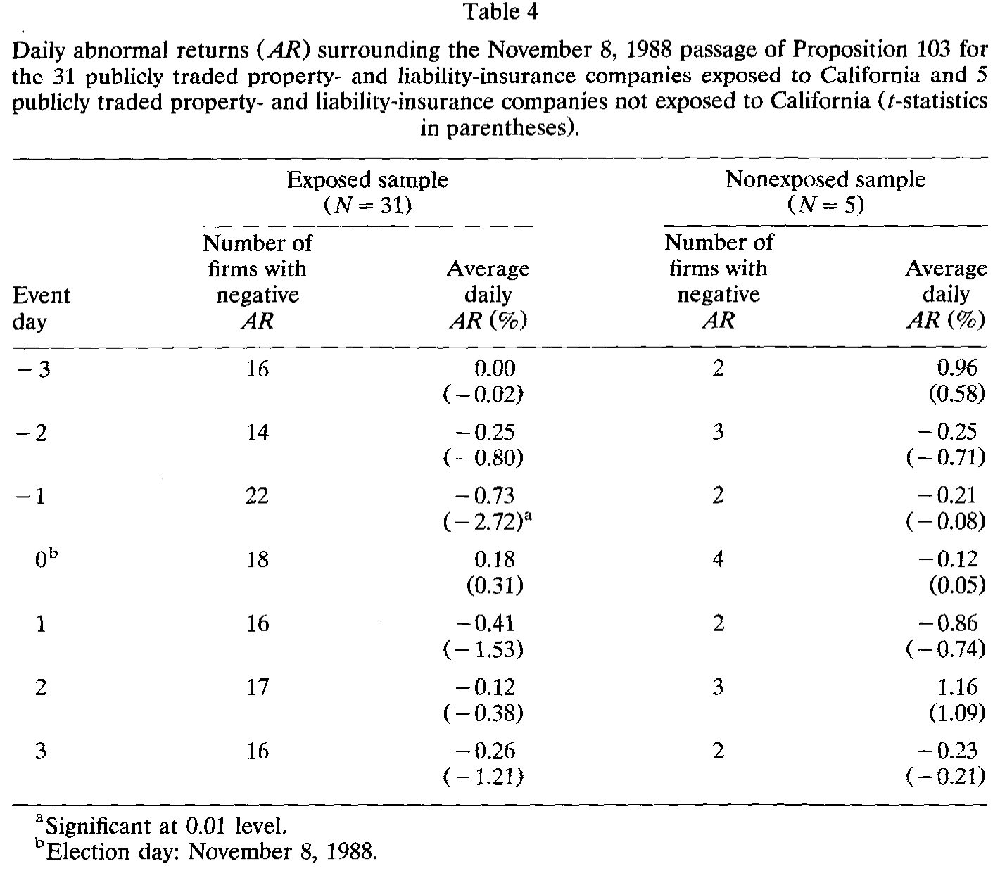
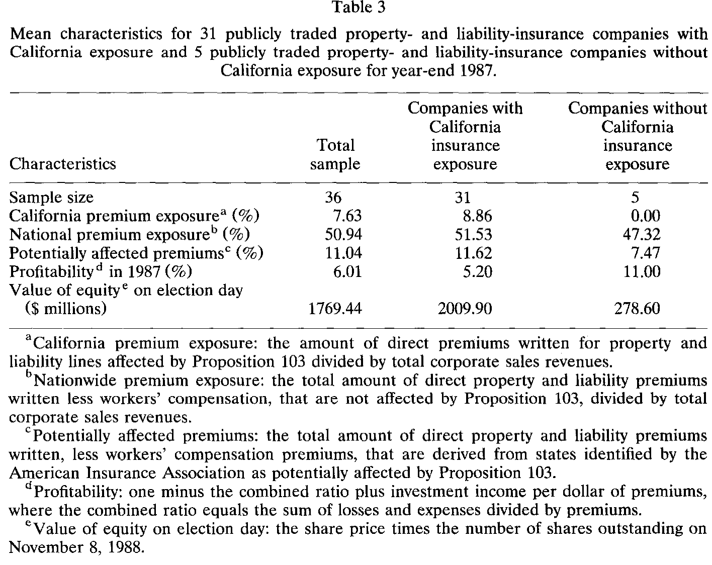
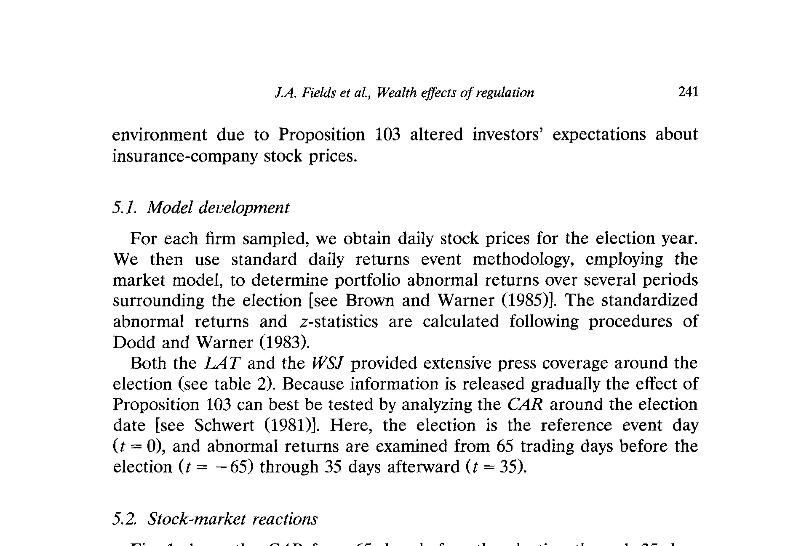
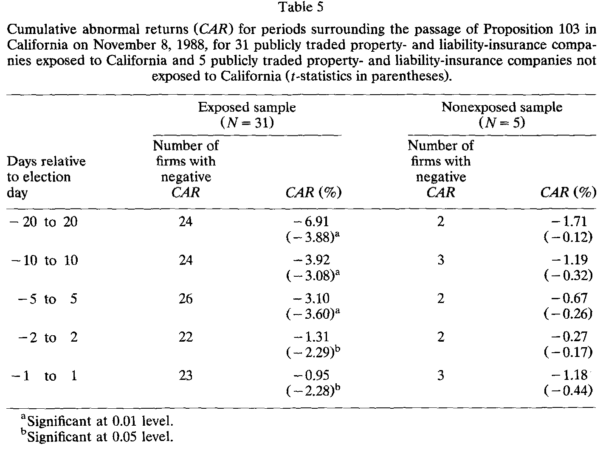
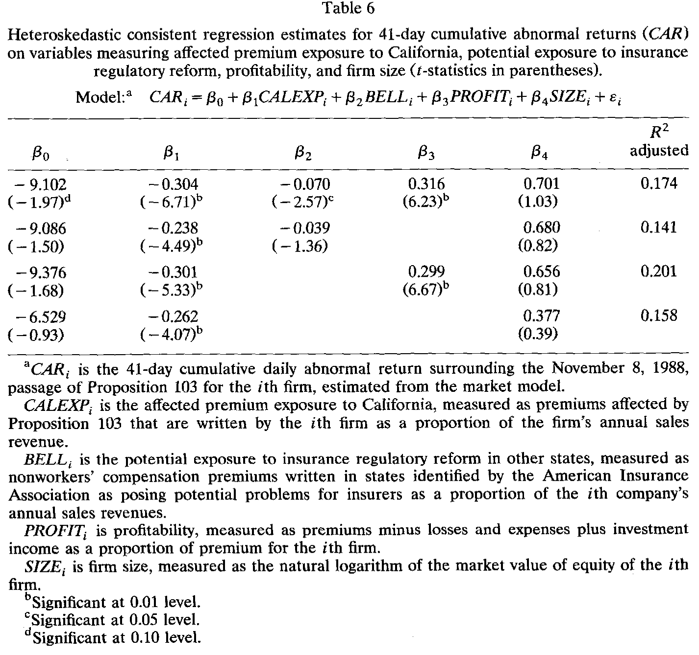
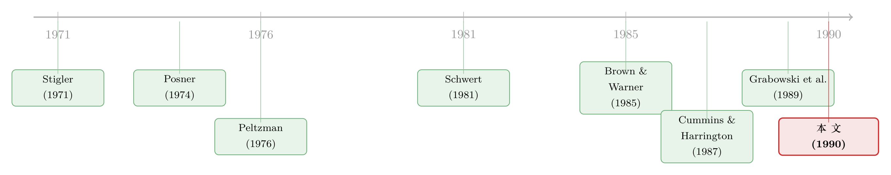

他们花了六千万美元，却没拦住自己市值蒸发 7%
本文读的是 Fields, Ghosh, Kidwell & Klein (1990, JFE)：1988 年 11 月加州公投通过 103 号提案，把保险定价从「市场化」一夜推回「重度管制」。在选举前后的 41 个交易日里，在加州经营的财产与责任险公司股价平均下跌 6.91%（t = -3.88，1% 显著）；而且跌幅越大，越是那些加州保费敞口高、在其他可能跟进改革的州也有业务、且本身盈利能力差的公司。
1 一场「赢了却输了」的战争
先讲一个奇怪的事实。
1988 年，为了阻止加州 103 号提案（Proposition 103）通过，保险行业的游说团体 Insurance Initiative Company Committee 砸下了 超过 6000 万美元——这个组织代表了加州 90% 以上的承保保费。而站在对面的消费者团体，包括 Ralph Nader、Common Cause、Consumers Union，只花了 220 万美元。
钱多的一方输了。1988 年 11 月 8 日，提案以 51% 对 49% 的微弱多数获得通过。它要求：所有保费立即至少回滚（rollback）20%、未来一切费率必须经保险专员事先批准、保险专员改由民选而非任命、车险费率主要看驾驶记录而非车辆所在地。一句话，加州从全美唯一一个「让竞争决定费率」的州，变成了和其它州一样「直接管制费率」的州。
这就带出了本文真正想问的问题：当一项管制不是被行业「俘获」、而是直接砸向行业时，资本市场会如何给它定价？跌多少？又是谁跌得最惨？
听上去答案显而易见——管制收紧，保险公司当然要跌。但请耐心一点，这篇 1990 年的论文真正的价值不在「跌了」这个结论，而在它把这场公投做成了一次近乎完美的自然实验，并借此回头审视了一整套关于「管制为谁服务」的理论。
2 为什么是加州？——一道被「俘获理论」漏算的题
要理解这篇文章的张力，得先回到管制经济学的老地基。
俘获理论（capture theory），由 Stigler (1971) 与 Posner (1974) 提出，核心观点是：行业之所以寻求管制，恰恰是为了限制竞争、抬高自己的现金流。逻辑很妙：立法过程被那些不常面对选举、且每次选举要同时处理大量议题的政客主导，于是普通选民很难盯住政客的一举一动；相比之下，像「一个行业」这样的特殊利益集团却能高效地组织起来去影响立法。结果就是——公共福利往往不是被最大化的那个。
接着，Peltzman (1976) 把它推广成一个更一般的均衡模型：管制者要最大化的是自己的政治支持（选票加捐款），各利益集团则根据自己从立法中预期的得失来决定支持谁。在这个框架里，财富转移之所以常常流向受管制行业，是因为行业的人均利益巨大，而管制成本被分摊到无数人均利益微小的消费者头上——后者懒得组织起来反抗。Peltzman 还点出一个「旋转门」（revolving door）效应：很多管制者来自、又终将回到他们所管制的行业，所以他们有动机去呵护这个行业的繁荣。
那么，按这套理论，加州的保险公司本该稳坐钓鱼台才对。可现实偏偏反过来了。为什么？
这正是作者最漂亮的一段论证。他们指出，103 号提案和加州的公投制度，恰好把 Peltzman 模型赖以成立的几个条件逐一打破了：
- 人均利益不再「微小」。 Peltzman 说小额的人均损失难以动员大众。可这次不一样——过去三年加州车险涨了
40%，20%的回滚对每个选民都是一笔看得见的真金白银。消费者第一次有了「抱团」的强动机。 - 公投降低了组织成本。 加州习惯把许多本该由议员决定的议题直接交给全民公决，这大大降低了消费者组织起来的成本，也相应削弱了行业影响立法的能力。
- 旋转门被焊死了。 提案把保险专员从「州长任命」改成「民选」，还限制候选人与行业的瓜葛——这直接拉低了「行业自己人当上专员」的概率，等于砍掉了未来的管制红利。
于是结论是清晰的：在加州这个特定的制度土壤里，管制的天平不再偏向行业。作者由此提出可检验的假说——103 号提案的后果对保险业不利，会压低在加州经营的保险公司的价值。
理论铺垫到这里，剩下的就交给市场了。
3 识别策略：把一场公投做成自然实验
怎么测「市场怎么看」？答案是经典的事件研究（event study）。
作者用标准的日度收益事件方法，套用市场模型（market model）估计每家公司在选举前后的异常收益（abnormal return, AR）与累积异常收益（cumulative abnormal return, CAR），具体的标准化异常收益与 z 统计量遵循 Dodd and Warner (1983) 的程序，事件方法本身参照 Brown and Warner (1985)。
这里有一个容易被忽略、却恰恰是本文识别力来源的细节：信息是逐步释放的。 提案不是某一天突然冒出来的——早在 6 月 8 日《华尔街日报》就讨论过它，10 月 25 日《洛杉矶时报》预测它有望通过，11 月 5 日的民调显示支持方领先 12 个百分点……一直到选后评级机构 S&P、Moody's 相继表态。因为信息是「细水长流」的，所以正如 Schwert (1981) 所言，最该看的不是某一个事件日的跳动，而是选举日前后一整段时间的 CAR。于是作者把事件窗设得很宽——从选举前 65 个交易日（t = -65）一直看到选举后 35 天（t = +35）。
如下表所示，作者把围绕公投的关键新闻按交易日一一对齐，构成了整个事件研究的时间轴。

Table 4
更妙的是，这个设计自带一个对照组：样本里有 5 家在加州没有业务的财险公司。如果股价下跌真是 103 号提案造成的，那么这 5 家「不沾加州」的公司就不该有显著反应。这就把「整个保险板块恰好那段时间一起跌」之类的混淆因素挡在了门外——这是本文识别逻辑里很关键的一步。
把「无敞口公司」当对照组，本质上和今天我们用「未受冲击的同类」做平行对照是一个思路。事件窗拉到 100 天虽然提高了捕捉信息的能力，却也放大了一个老问题：窗口越长，越容易混进别的消息。关于「事件本身会把方差吹大、让 t 值说谎」这一更微妙的方法论陷阱，可参见《你的 t 值在撒谎：当事件本身把方差吹大了》。
4 数据：36 家公司，一条清晰的分界线
样本是从 A.M. Best's Aggregates and Averages 里挑出的 52 家深度涉足财产与责任险的上市公司。剔除掉在事件期前后有重大公告（4 家被收购目标、1 家变更股利）或数据不全（11 家）的，最终剩 36 家——其中 31 家在加州有财险敞口，5 家没有。
股价数据取自 S&P 的 Daily Stock Price Records；公司的经营特征则取自 1987 年底（提案尚未生效、数据未被污染的最后一年）。看一眼这两组公司的画像，分界线非常清楚：

Table 3
如表 3 所示，几个关键变量值得记住：
- 31 家加州敞口公司的加州保费敞口（California premium exposure）平均为
8.86%，无敞口组为0； - 两组的全国保费敞口分别为
51.53%与47.32%——说明它们都重度依赖财险业务，不是「顺带卖保险」的杂牌军； - 作者还特意挑出了被美国保险协会（American Insurance Association）点名的 10 个可能跟进立法的州（Arizona、Colorado、Florida、Maine、Massachusetts、Michigan、Nevada、Ohio、Oregon、Washington），这些州的「潜在受影响保费」（potentially affected premiums）在两组分别为
11.62%与7.47%； - 盈利能力上，加州敞口组只有
5.20%，而无敞口组高达11.00%——加州公司本来就更不赚钱； - 规模上，加州敞口组股权市值平均
20.10亿美元，无敞口组仅2.79亿——因为几乎所有大保险公司都在加州（全美最大的保险市场）做生意。
记住这几条对比，下一节的横截面结果会突然变得很有味道。
5 主要结果：6.91% 的蒸发，和一条干净的对照线
先看整体。

Figure 1: shows the CAR from 65 days before the election through 35 days
如图 1 所示，从选举前 65 天到选举后 35 天，加州敞口公司的 CAR 曲线在前期基本是随机游走的；但从选举前 20 天开始，曲线掉头向下，一路下行直到选举后 25 天才稳住——这段时间恰好密集地塞满了关于提案通过及其影响的各种信息。再往后到年底（+35 天），曲线重新走平，意味着收益生成过程又回到了随机。换句话说，市场用了大约两个月把这场监管巨变消化进了价格里。
那跌了多少？答案集中在 41 天窗口（-20 到 +20）：

Table 5
如表 5 所示：
- 41 天窗口（-20 到 +20）：CAR =
-6.91%，t = -3.88，1% 显著，31 家里有 24 家为负——这是本文的招牌数字； - 21 天窗口（-10 到 +10）：
-3.92%（t = -3.08，1% 显著）； - 11 天窗口（-5 到 +5）：
-3.10%（t = -3.60，1% 显著）； - 更短的 5 天、3 天窗口分别为
-1.31%、-0.95%，5% 显著。
而对照组呢？5 家无加州敞口的公司在 41 天窗口里 CAR 只有 -1.71%，t = -0.12，完全不显著。这条干净的对照线，把「跌是因为加州提案」这个因果几乎钉死了。
再放大到单日（见前面表 2 的新闻时间轴）：选举前一天（t = -1），加州敞口组异常收益 = -0.73%，t = -2.72，1% 显著。这一天正是《洛杉矶时报》登出民调（支持方领先 12%）、《华尔街日报》给出负面评估的日子。而选举日当天（t = 0）的异常收益是 +0.18%，不显著——说明投资者在选举尘埃落定之前，就已经把预期算进了价格。这是市场有效性的一个漂亮注脚：等结果出来，价格早已反应完毕。
6 横截面：谁跌得最惨？——一个回归方程的故事
整体跌了 7%，但这只是平均数。真正有意思的问题是：这 7% 在 36 家公司之间是怎么分配的？
作者用 White (1980) 的异方差稳健回归，在 41 天窗口上估计 CAR 与公司特征的关系。这个方程是全文的「中枢」，值得把每一项的经济含义讲透：
逐项看预期符号背后的故事：
- CALEXP < 0。 一家公司在加州受提案影响的保费占比越高，它被 103 号提案削掉的现金流就越多，CAR 自然更负。这是最直觉的一项。
- BELL < 0，这是本文最聪明的一笔。 作者问：103 号提案会不会是全国监管转向的「风向标」（bellwether）？如果投资者预期改革会蔓延到其他州，那么在那 10 个「高危州」有业务的公司也该被打折。Grabowski, Viscusi, and Evans (1989) 此前就警告过，这场公投可能预示一个更激进的监管时代回归。换句话说，市场定价的不只是「加州这一州的损失」，还包括「这事会不会传染」的期权。
- PROFIT > 0。 越赚钱的公司，被强制降价 20% 之后离「亏损/资不抵债」越远，受冲击相对越小。注意前面表 3 里那个对比——加州敞口公司本就更不赚钱（5.20% vs 11.00%）——这让盈利能力的保护作用格外刺眼。
- SIZE > 0。 这是个控制变量，参照 Barry and Brown (1984)，作为公司信息不对称的代理。投资者对大公司了解更多，小公司可能因信息更不透明而承受更大的负 CAR。

Table 6
如表 6 所示，作者估计了全模型与三个逐一剔除变量的稳健性回归。正文给出的核心结论是：CALEXP 的估计系数符合预期、为负，且在 1% 水平显著。结合摘要的表述，整套结果可以这样总结——股价跌幅正向取决于受提案影响的加州保费占比、也正向取决于在其他可能改革的州的保费占比（即风向标效应成立），并负向取决于公司的盈利能力。三个假设，三个方向，全部得到支持。
需要诚实地说明：由于本文正文在表 6 处被截断，我们能确证的是 CALEXP 在 1% 水平显著为负，以及 BELL、PROFIT 的方向性结论（来自摘要与正文的假设陈述）。各系数的具体量级与 t 值不在可见文本之内，故此处不报告——宁可缺一个数字，也不编一个数字。
7 文献脉络：从「行业俘获管制」到「管制反噬行业」
把这篇文章放回它所在的那条线，脉络非常清楚。
起点是管制的「政治经济学」转向。 Stigler (1971) 提出俘获理论，第一次把「管制」从「纠正市场失灵的善意工具」改写成「行业自利的产物」；Posner (1974) 紧随其后，系统梳理了经济管制的各派理论；Peltzman (1976) 则把它一般化为一个利益集团竞争的均衡模型，给出了「财富为何流向行业」的可操作机制。这三篇构成了本文的理论母体。
接着，方法论的钥匙到位了。 Schwert (1981) 论证了如何用金融市场数据去度量管制的效果——这正是本文「用 CAR 给一项监管定价」的直接依据；Brown and Warner (1985)、Dodd and Warner (1983) 则提供了事件研究的标准工具箱。
然后，保险业的制度背景被补齐。 Cummins and Harrington (1987) 研究了费率管制对财险损失率的影响，指出有些州不允许足够的回报率、并通过禁止退保来限制退出，从而把财富从外州转移给本州居民——这给「管制如何具体伤害行业」提供了微观证据。Grabowski, Viscusi, and Evans (1989) 则直接研究了车险管制下价格与可得性的权衡，并发出了「监管激进时代可能回归」的警告。
本文（1990）的位置，是把上述两条线拧在了一起。 它既是 Schwert 式「用市场数据度量管制」的一次干净应用，又是对俘获理论的一次反向检验：当制度环境（公投 + 民选专员）让 Peltzman 模型失效时，管制果然反噬了行业，而且市场精确地为这场反噬以及它的「传染风险」定了价。

如果你对「用事件研究给一项监管政策称重」这套路数感兴趣，一个有趣的对照是后来在英国做的类似实验——监管收紧究竟有没有真的改变公司面对的市场风险，可参见《监管能不能「调」走风险？》。而保险业里「坏消息如何在公司间传染」的更现代证据，可参见《保单持有人会用脚投票——一场寿险业的「无声挤兑」》。
8 评论与延伸（Q&A + 研究方向）
(a) 几个可能的疑问
Q：6.91% 这个数字，会不会只是「保险股那段时间恰好都在跌」？
这正是对照组存在的意义。5 家无加州敞口的财险公司在同一 41 天窗口里 CAR 仅 -1.71%、且不显著（t = -0.12）。两组之间这道清晰的落差，把「整个板块共同下行」这一最主要的混淆因素挡在了门外。
Q：事件窗拉到 -20 到 +20 这么宽，会不会混进了别的消息？
是个真问题。窗口越长，识别力越弱。作者的辩护是：103 号提案的信息本就是逐步释放的（Schwert 1981 的逻辑），单日窗口会系统性地低估其影响；而图 1 显示 CAR 恰好在 -20 到 +25 这段集中下行、之后转平，说明这段窗口确实对应着信息的密集消化期，而非随意截取。
Q：「风向标效应」（BELL）显著，到底说明了什么？
它说明市场定价的不只是「加州这一州的当期损失」，还包括「这套改革会不会蔓延到其他州」的预期。这是本文超出「就事论事」的地方——它把一次地方公投，读成了一个关于全国监管走向的信号。
Q：为什么盈利能力越高，跌得越少？这不反直觉吗？
不反直觉。强制回滚 20% 是对现金流的「平移」冲击；本就盈利薄的公司离亏损/破产的红线更近，同样的降价对它们的边际伤害更大。盈利能力在这里扮演了「缓冲垫」的角色。
Q：这篇文章证伪了俘获理论吗？
没有，恰恰相反——它是在俘获理论的框架内部做文章。作者的论证是：俘获之所以这次没发生，是因为加州的公投制度与民选专员条款打破了 Peltzman 模型的前提（人均利益微小、组织成本高、旋转门通畅）。理论没被推翻，反而被「条件化」地验证了一次。
Q：只有 36 家公司，样本是不是太小？
对横截面回归确实偏小，尤其对照组只有 5 家，统计功效有限。但事件研究的主结果（-6.91%，t = -3.88）依赖的是时间序列上的异常收益累积，对样本量的依赖没那么致命。横截面那部分的结论，更应被当作「方向性证据」而非精确估计。
(b) 几个可能的研究问题与提案
1. 把「风向标效应」做成一次真正的跨州事件研究。 【经济故事】本文的 BELL 只是用「事前点名的 10 个高危州」的保费敞口做代理。但那 10 个州后来到底有没有跟进立法？若跟进，当时的股价反应能否验证 1988 年市场「抢跑」的预期是否正确？这是一个检验市场预期理性的好场景。 【可行性】中。需要手工整理 1989–1995 年各州保险监管立法的时间线，再对每次立法做事件研究。数据可得（州立法记录公开），工作量在于整理，识别策略成熟。
2. 从股市搬到债市：管制冲击如何重定价保险公司的信用利差？ 【经济故事】强制降价 20% 直接威胁的是偿付能力，而这恰恰是债权人最在意的。S&P、Moody's 在选后都表达了对信用评级的担忧。那么这场公投对保险公司债券利差的冲击有多大？是否比股票反应更剧烈（因为下行风险对债权人更敏感）？ 【可行性】中。难点在 1988 年保险公司公开债的交易数据稀薄、流动性差。可优先用有公开债且评级被实际调整的子样本，结合 CDS（若年代允许）或债券报价做事件研究。识别同样可借「无加州敞口」对照组。
3. 外资持有人在监管冲击中的角色。 【经济故事】本文未区分持有人结构。一个自然的问题是：当一项地方性监管冲击袭来时，外资/机构持有人是更快撤离（放大跌幅），还是更冷静（被本地散户的恐慌定价反而提供流动性）？这关系到「谁在为监管风险定价」。 【可行性】低到中。1988 年的持有人结构数据较难获得，且需要把持仓数据与单一事件对齐。更现实的做法是把这套设计搬到近年某次地方监管公投（数据更全），用 13F 与外资持仓数据检验。
4. 「管制传染」的网络结构。 【经济故事】103 号提案被当作风向标，意味着州与州之间存在某种「监管模仿」网络。能否用各州的政治、人口、保费结构相似度，预测哪些州更可能跟进、以及市场是否据此差异化定价不同公司？ 【可行性】中。需构建州间相似度矩阵与监管扩散数据。识别上可借鉴政策扩散文献，把「邻州是否已立法」作为冲击。doable，但属于较重的实证工程。
9 我的判断
这篇文章的贡献，不在于「证明了管制收紧让保险股下跌」这个并不令人意外的结论，而在于三件事的组合：第一，它把一场全民公投做成了一个带干净对照组的自然实验，把因果几乎钉死；第二，它通过 BELL 变量，把一次地方事件提升为一个关于全国监管走向的市场信号，这是真正有想象力的一步；第三，它用一个反例，给俘获理论做了一次「条件化」的精细检验——不是推翻，而是划出边界。
对识别的担忧主要有两点。其一是横截面的统计功效：36 家公司、5 家对照，回归结论应被谨慎对待为方向性证据。其二是窗口选择的内生性：41 天窗口虽有图 1 的形态支持，但宽窗口天然更易混入噪声，理想情况下应辅以更结构化的、对「方差被事件吹大」做了校正的检验。
后续我最想看到的，是把这套「用市场价格给监管定价」的方法，从股票推进到信用市场。强制降价首先威胁的是偿付能力，而债权人对下行风险的敏感度远高于股东——保险公司公开债与 CDS 的反应，很可能比股票更剧烈、也更能揭示这场监管冲击真正的「尾部」含义。这恰恰是 1990 年那个数据稀薄的年代做不了、而今天可以补上的一块拼图。
参考文献
Barry, Christopher B. and Stephen J. Brown (1984). Differential information and the small firm effect. Journal of Financial Economics 13, 283–294.
Brown, Stephen J. and Jerold B. Warner (1985). Using daily stock returns: The case of event studies. Journal of Financial Economics 14, 3–31.
Cummins, J. David and Scott E. Harrington (1987). The impact of rate regulation on property-liability insurance loss ratios: A cross sectional analysis with individual firm data. Geneva Papers on Risk and Insurance 12, 50–62.
Dodd, Peter and Jerold B. Warner (1983). On corporate governance: A study of proxy contests. Journal of Financial Economics 11, 401–438.
Fields, Joseph A., Chinmoy Ghosh, David S. Kidwell and Linda S. Klein (1990). Wealth effects of regulatory reform: The reaction to California's Proposition 103. Journal of Financial Economics 28, 233–250.
Grabowski, Henry, W. Kip Viscusi and William N. Evans (1989). Price and availability tradeoffs of automobile insurance regulation. The Journal of Risk and Insurance 56, 275–299.
Peltzman, Sam (1976). Towards a more general theory of regulation. Journal of Law and Economics 19, 211–240.
Posner, Richard A. (1974). Theories of economic regulation. Bell Journal of Economics and Management Science 5, 335–358.
Schwert, G. William (1981). Using financial data to measure the effects of regulation. Journal of Law and Economics 24, 121–158.
Stigler, George S. (1971). The theory of economic regulation. Bell Journal of Economics and Management Science 2, 3–21.
White, Halbert (1980). A heteroskedastic consistent covariance matrix estimator and a direct test for heteroskedasticity. Econometrica 48, 817–838.